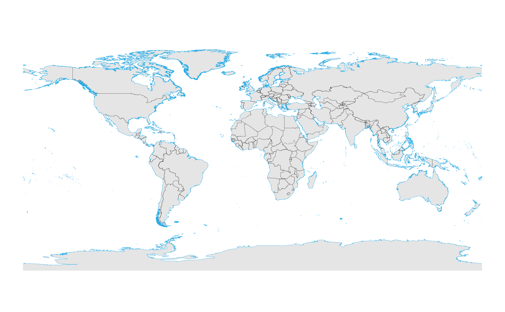
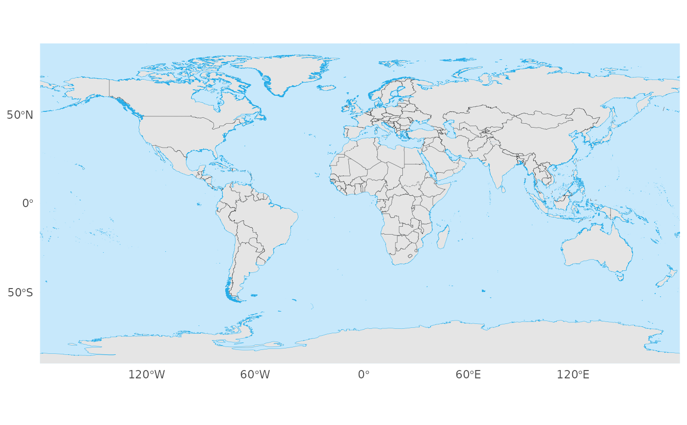
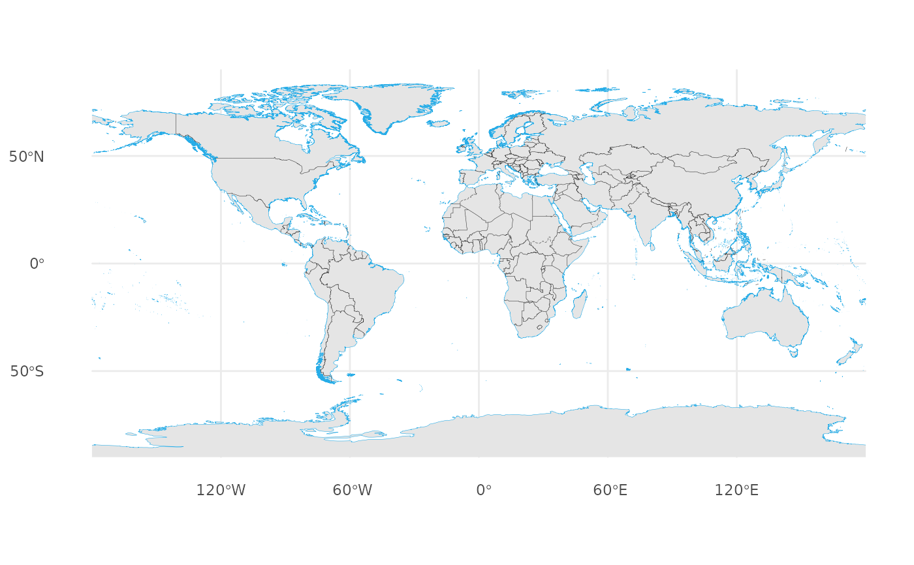
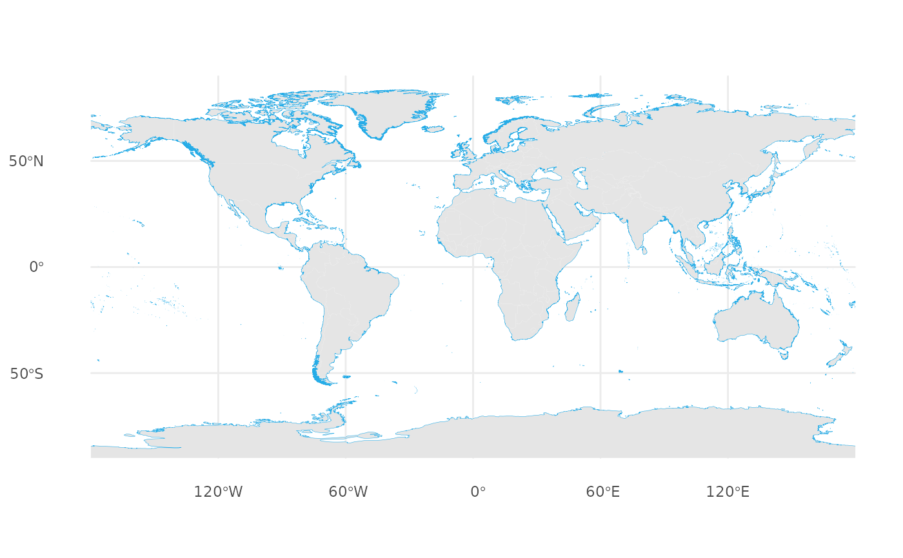
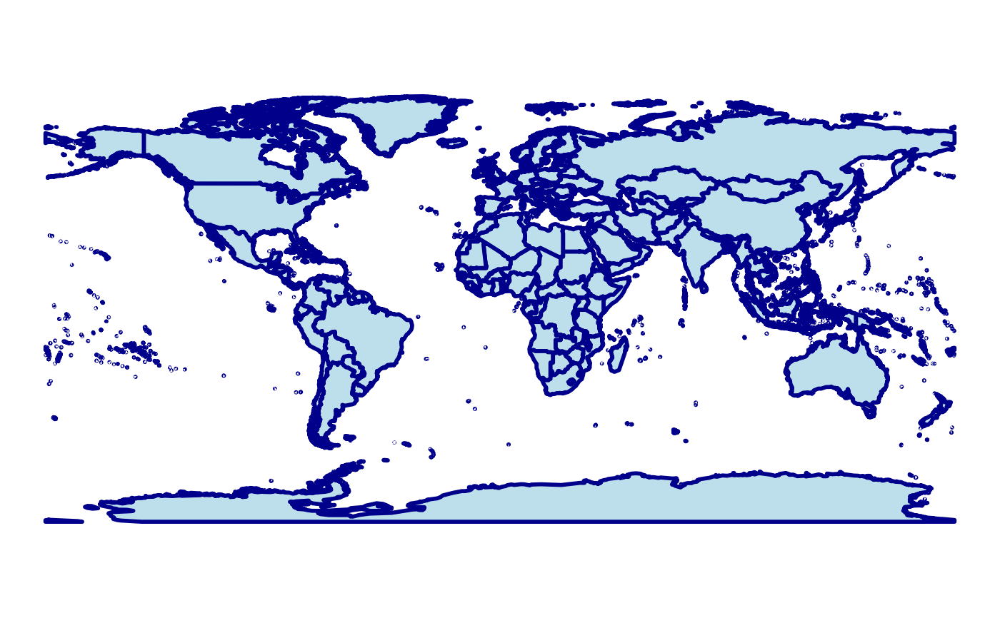

`geom_world()` draws a styled global basemap using bundled country polygons, coastlines, and administrative boundary data. It automatically handles antimeridian splitting and CRS transformation, and supports optional country filtering for focused maps.
Usage
geom_world(
crs = 4326,
filter_attribute = "SOC",
filter = NULL,
show_ocean = TRUE,
show_admin_boundaries = TRUE,
show_frame = FALSE,
ocean_fill = "#c7e8fb",
frame_color = "black",
frame_size = 0.2,
frame_linetype = "solid",
country_fill = "grey90",
country_boundary_color = "transparent",
country_boundary_size = 0.1,
country_boundary_linetype = "solid",
coastline_color = "#26ace7",
coastline_size = 0.1,
coastline_linetype = "solid",
international_boundary_color = "grey20",
international_boundary_size = 0.1,
international_boundary_linetype = "solid",
regional_boundary_color = "grey20",
regional_boundary_size = 0.1,
regional_boundary_linetype = "dashed",
undefined_boundary_color = "grey20",
undefined_boundary_size = 0.1,
undefined_boundary_linetype = "longdash",
military_boundary_color = "grey20",
military_boundary_size = 0.1,
military_boundary_linetype = "dotted",
...
)Arguments
- crs
Coordinate reference system for the basemap. Accepts a numeric EPSG code, a PROJ string, or an [sf::crs] object. The default is `4326` (WGS84).
- filter_attribute
Name of the column in the `countries` dataset used for filtering. Default `"SOC"`.
- filter
Character vector specifying which values of `filter_attribute` to retain. If `NULL` (default), no filtering is applied. When non-`NULL`, only the selected countries are drawn, and the ocean, coastlines, administrative boundaries, and frame are omitted.
- show_ocean
Logical; draw an ocean background polygon. Default `TRUE`. Ignored when `filter` is not `NULL`.
- show_admin_boundaries
Logical; draw administrative and political boundaries (international, regional, undefined/disputed, and military demarcation lines). Default `TRUE`. Ignored when `filter` is not `NULL`.
- show_frame
Logical; draw an outer frame following the projected outline of the world. Default `FALSE`. Ignored when `filter` is not `NULL`.
- ocean_fill
Fill color for the ocean polygon. Default `"#c7e8fb"`.
- frame_color
Color of the outer frame line. Default `"grey20"`.
- frame_size
Line width of the outer frame. Default `0.1`.
- frame_linetype
Line type of the outer frame. Default `"solid"`.
- country_fill
Fill color for country polygons. Default `"grey90"`.
- country_boundary_color
Color of country boundary outlines. Default `"transparent"`.
- country_boundary_size
Width of country boundary outlines. Default `0.1`.
- country_boundary_linetype
Line type of country boundaries. Default `"solid"`.
- coastline_color
Color of the coastline layer. Default `"#26ace7"`.
- coastline_size
Line width of coastlines. Default `0.1`.
- coastline_linetype
Line type of coastlines. Default `"solid"`.
- international_boundary_color
Color for international boundary lines. Default `"grey20"`.
- international_boundary_size
Width for international boundaries. Default `0.1`.
- international_boundary_linetype
Line type for international boundaries. Default `"solid"`.
- regional_boundary_color
Color for regional boundaries (e.g. states). Default `"grey20"`.
- regional_boundary_size
Width for regional boundaries. Default `0.1`.
- regional_boundary_linetype
Line type for regional boundaries. Default `"dashed"`.
- undefined_boundary_color
Color for undefined or disputed boundaries. Default `"grey20"`.
- undefined_boundary_size
Width for undefined boundaries. Default `0.1`.
- undefined_boundary_linetype
Line type for undefined boundaries. Default `"longdash"`.
- military_boundary_color
Color for military demarcation lines. Default `"grey20"`.
- military_boundary_size
Width for military demarcation lines. Default `0.1`.
- military_boundary_linetype
Line type for military demarcation lines. Default `"dotted"`.
- ...
Additional arguments passed to [ggplot2::geom_sf()] for the country polygons layer.
Value
A list of [ggplot2] layers representing the world map (or a filtered subset), ready to be added to a ggplot.
Details
This function supersedes early development versions that required users to supply their own map data.
The current implementation:
- Always uses bundled world map data (countries, coastlines, boundaries). - Exposes dedicated arguments for ocean fill, coastlines, and administrative boundaries. - Builds a projection-aware global outline for the ocean/frame layer. For **geographic CRSs** (including those with a shifted central meridian, e.g., `+lon_0=150`), it creates a seamless rectangular bounding box directly in the target CRS to avoid topological splitting artifacts (vertical lines). For **projected CRSs** (e.g., Robinson, Mollweide), it computes the convex hull of the projected graticule.
Examples
library(ggplot2)
# \donttest{
# 1. Simple World Map (WGS84)
ggplot() +
geom_world() +
theme_void()

# 2. Pacific-Centered View (Shifted LongLat)
crs_longlat_150 <- "+proj=longlat +datum=WGS84 +lon_0=150"
ggplot() +
geom_world(crs = crs_longlat_150, show_frame = TRUE, show_ocean = FALSE) +
theme_void()

# 3. Robinson Projection (Projected CRS)
crs_robin <- "+proj=robin +lon_0=0 +datum=WGS84"
ggplot() +
geom_world(crs = crs_robin, show_frame = TRUE) +
theme_void()

# 4. Without administrative boundaries
ggplot() +
geom_world(show_admin_boundaries = FALSE) +
theme_minimal()

# 5. Highlighting specific countries (China)
ggplot() +
geom_world(country_fill = "grey95") +
geom_world(
filter_attribute = "SOC",
filter = "CHN",
country_fill = "red",
country_boundary_color = "black"
) +
theme_void()

# }